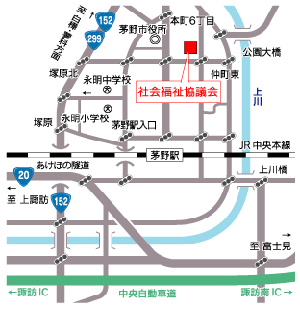

トップページ＜お問い合わせ・地図
電話・FAX・メールによる問い合わせ
社会福祉法人 茅野市社会福祉協議会 茅野市ボランティア・市民活動センター |
|
|---|---|
〒391-0002 電話 0266-73-4431 |
 |
地域生活支援係 (各保健福祉サービスセンター内) |
|
| 中部（ちの・米沢・中大塩） | 電話：0266-82-0360 |
| 西部（宮川・金沢） | 電話：0266-82-1328 |
| 東部（玉川・豊平・泉野） | 電話：0266-82-1521 |
| 北部（湖東・北山） | 電話：0266-77-3172 |
茅野市社会福祉協議会 介護保険事業所 |
|
| 居宅介護支援事業所 〒391-0002 茅野市塚原2丁目5番45号 |
電話 0266-82-0211 FAX 0266-73-8030 |
| 東部訪問介護事業所 〒391-0011 茅野市玉川4300番地 |
電話 0266-82-1416 FAX 0266-82-2722 |
| 西部訪問介護事業所 〒391-0013 茅野市宮川3975番地 |
電話 0266-82-1415 |
| 西部デイサービスセンター 〒391-0013 茅野市宮川3975番地 |
電話 0266-82-6161 FAX 0266-82-1107 |
| 地域活動支援センター あすなろセンター | |
| 〒391-0002 茅野市塚原1丁目15番30号 |
電話 0266-72-7972 FAX 0266-72-7972 |
| 塩壺(しおつぼ)の湯デイサービスセンター | |
| 〒391-0216 茅野市米沢6841番地 |
電話 0266-82-3377 FAX 0266-82-3377 |
 Ｅメールでのお問い合わせ
Ｅメールでのお問い合わせ
Ｅメールでのお問い合わせは、support@sharara.or.jpまでお願いします。ご自分のお名前とご連絡先を必ず記入してください。尚、返答に少し時間がかかってしまう場合もございますが、ご了承ください。

 茅野市社会福祉協議会
茅野市社会福祉協議会